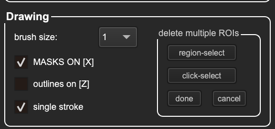

Day 5, Session 2 - Segmenting Data with Cellpose#
Lab authors: Beth Cimini .
Learning Objectives#
Try Cellpose models on a variety of data
Learn to tell if Cellpose needs to be re-trained or just the parameters played with
Compare performance in Cellpose 4 to performance in Cellpose 3
You can download some sample images from this Drive folder (it’s the same data we used yesterday in MicroSAM, if you already downloaded that, plus some of the images we used the first day on Piximi, if you still have those)
It’s finally here, the last software we’re going to teach you - Cellpose!
Installation#
Using Pixi:
Clone the BAB3 repo locally (during the course, you should have already done this part!) and cd into that directory, then:
cd pixi_envs/cellpose3 #go to the directory containing the pixi files
pixi shell --frozen #activate the new cellpose3 environment (and install, if not already installed)
If successful, you should see (cellpose3) before your command line prompt. Within this Pixi shell, you should have everything you need for this workshop. You can activate Cellpose just by running cellpose
You can always exit the Pixi environment using the exit command.
If you get this error when activating Cellpose: OMP: Error #15: Initializing libomp.dylib, but found libomp.dylib already initialized. then run:
pip install --force-reinstall "cellpose<4"
When you’re ready for Cellpose4, the procedure is the same:
cd pixi_envs/cellpose4 #go to the directory containing the pixi files
pixi shell --frozen #activate the new cellpose4 environment (and install, if not already installed)
`cellpose`
Exercise part 1 - Cellpose 3#
Today, we have access to 3 of the MicroSAM example datasets (a timelapse set, a pathology set, and a 3D set, as well as the microglia images from Monday’s exercise). Let’s see how well they perform!
Cellpose 3 can be pretty great out of the box - here it is, untrained, on one of the pathology images.

Initially explore performance with an image set#
So let’s go to one that’s a little less good and see how it does.
Load an image from the timelpase set and let the
cyto3default model run. Good, but not great!
One parameter Cellpose (in 1-3, anyway) is pretty sensitive to is the initial diameter prediction - what happens when we change that?
Check the “dataset-specific models” on the left bar - do any of them do better than cyto3?
Fixing parameters rather than retraining#
If we can avoid retraining, it is always nice to avoid it where we can. Thankfully, there are a couple more very powerful parameters we can tune in Cellpose - how “coherent” of a flow it needs to have in order to consider an object a cell or not, as well as the probability image of if it’s a cell or not. We can access these images in the top left under the “Views” menu, by changing from “Image” to “gradxy” or “cellprob”.
See what they look like below!
In the “Additional Settings” menu, Cellpose lets us adjust these parameters
Play around with the flow threshold and cellprob threshold - can you improve the segmentation without retraining?
Tip
Not sure how to tune these parameters or what they mean? Hover over them to learn more!

Retraining#
Human-in-the-loop retraining (and easy finetuning) is why we love Cellpose so much, so let’s give it a try!
Take a good automatic prediction, and delete the masks you don’t want anymore 
Tip
Not sure how to annotate? Try the help menu for tips and hotkeys!
Annotate any cells you need to, by right clicking (or ctl+click to start, then release ctl and just keep drawing until the circle closes)

After you finish on image, go to
Models -> Trainto train a new model. Cellpose will automatically run it for you once it’s done training.How did it do?
Go to the next image, and try either a builtin model or your one-image model, and then fix up the annotations for training. Train with two images. How well does it work now?
How about with 3?
Exercise 2#
Play around a bit with the microglia data, as above.
How good can you make it look without retraining?
How easily can you retrain it?
Exercise 3#
Bring the worst peforming dataset (it will probably be the microglia) over to Cellpose 4. How well does it do out of the box? How well does it work after retraining with one images? Two?
Bonus exercise#
How do Cellpose 3 (and Cellpose 4, if your computer can handle it) work on the 3D dataset?
(Note that you’ll have to close the GUI and reopen it with cellpose --Zstack)
What if you try 2.5D mode (leave the stitch threshold parameter at 0) vs overlap mode (set the stitch threshold to something greater than 0)? Note that overlap is much faster, so you may want to try that first!